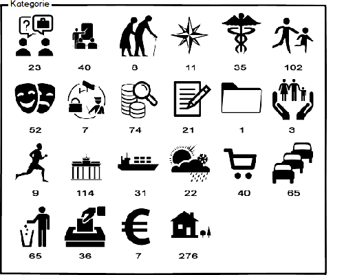
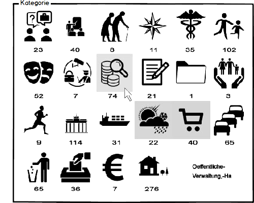
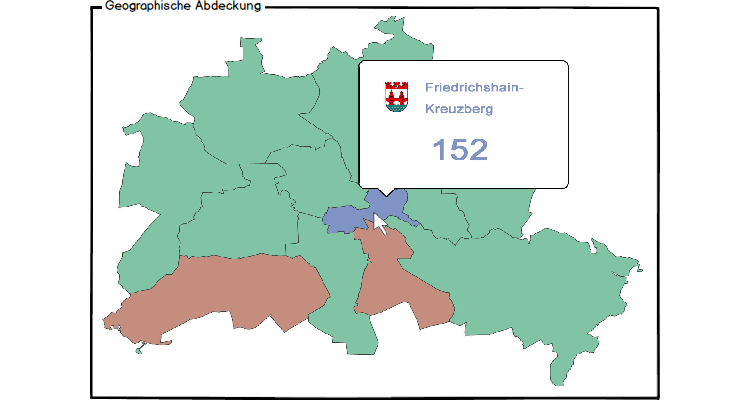
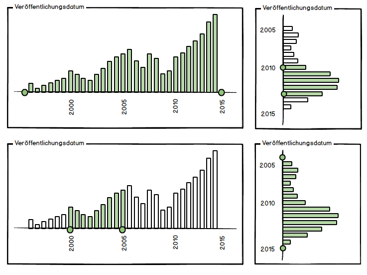
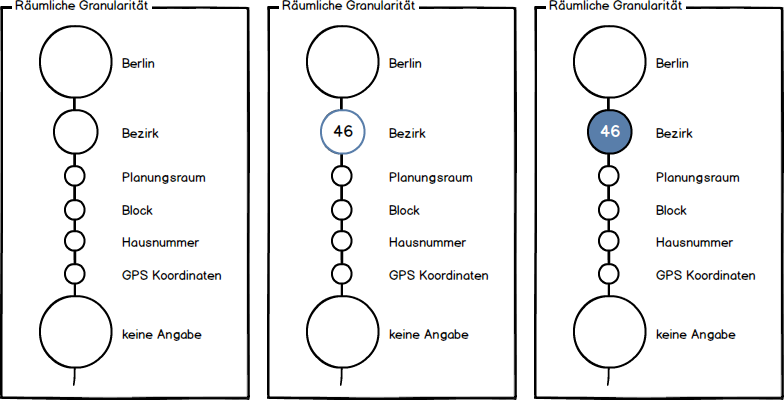

- Das Problem, Ist-Zustand
- Die Ressourcen
- Ausgewählte Metadaten
- Konzept, Soll-Zustand
- Demonstator
- Dokumentation
- Rückblick
Das Problem, Ist-Zustand
Das Problem, Ist-Zustand
Unsere Auswahl
Unsere Auswahl
Konzept
Konzept
Kategorie


Karte

Karte

Karte

Datum

Granularität

Granularität
Soll-Zustand

Soll-Zustand
Dokumentation
Rückblick
Ziele des Projekts:
- Erstellung eines Konzepts
- Designentscheidungen - Mockups
- Implementierung der Widgetkommunikation
- Implementierung der Widgets
- Erstellung der Dokumentation
Rückblick
Ziele des Projekts:
 Erstellung eines Konzepts Designentscheidungen - Mockups Implementierung der Widgetkommunikation Implementierung der Widgets Erstellung der Dokumentation
Erstellung eines Konzepts Designentscheidungen - Mockups Implementierung der Widgetkommunikation Implementierung der Widgets Erstellung der Dokumentation